Quel impact environnemental de l’usage des LLM côté client ? Battle ChatGPT vs DeepSeek
17 mars 2025Battles
Introduction
a. Contexte
Qui n’a jamais utilisé DeepSeek, ChatGPT, Copilot, Gemini, Mistral… ? Les LLMs (Large Language Models) deviennent des incontournables de la vie de tous les jours dans nos vies professionnelles ou personnelles.
Comme le précise l’étude de Deloitte, ces IA génératives ont un impact environnemental et énergétique élevé, notamment côté serveur. Elles représentent aujourd’hui 1.4% de la consommation d’électricité mondiale et devrait tripler d’ici 2030. Les modèles étant très lourds, ils consomment beaucoup lors du traitement de la donnée et la génération de la réponse. Une autre analyse de McKinsey publiée en octobre 2024, estime que la demande en capacité de datacenters adaptés à l’IA augmentera en moyenne de 33% par an entre 2023 et 2030.
Dans le cas d’une IA générative LLM, la consommation est élevée côté serveur mais il paraît intéressant de mesurer aussi la consommation et l’impact environnemental côté terminal utilisateur.
Récemment, DeepSeek a fait une entrée fracassante dans le milieu des LLMs en vantant des performances semblables aux meilleurs avec un modèle plus léger, donc moins consommateur côté serveur. Mais qu’en est-il côté client ? Nous proposons donc de mesurer et comparer sur la base d’un même parcours les performances des applications DeepSeek et ChatGPT.
Toutes ces mesures ont été réalisées sur terminal réel, ici un Samsung Galaxy S10 sur Android 12. Un tel modèle correspond à un smartphone d’entrée de gamme aujourd’hui.
Ces mesures ont été réalisées sur :
La versions 1.0.8 de DeepSeek
La version 1.2025.028 de ChatGPT.
c. Méthodologie et parcours
Pour mesurer les deux applications, nous avons utilisé un scénario utilisateur commun pour les 2 applications testées :
Ouverture de l’application
Connexion à un compte
Rédaction d’un premier prompt dit « prompt simple » : « Je suis à la recherche d’un stage dans le numérique responsable. Explique-moi en une phrase ce que c’est. »
Attente de la réponse au prompt simple
Rédaction d’un second prompt demandant une réponse de 500 mots dit « prompt 500 mots » : « A présent rentre dans le détail en développant ce qu’est le numérique responsable en 500 mots sans chercher sur le web. »
Attente de la réponse au prompt 500 mots
Activation de la fonction recherche sur internet
Rédaction d’un troisième prompt demandant la même chose que le prompt 500 mots mais en cherchant sur le web, « prompt web » : « A présent rentre dans le détail en développant ce qu’est le numérique responsable en 500 mots en cherchant sur le web. »
Attente de la réponse au prompt web
Téléchargement d’un CV sur internet
Insertion d’un fichier dans le LLM
A noter que ces différents prompts s’enchaînent dans une seule et même discussion.
Note méthodologique complémentaire :
Nous avons intégré uniquement les mesures qui fonctionnellement présentent un résultat. Il a été fréquent au cours des mesures que DeepSeek ne réponde pas à la demande de l’utilisateur, probablement, par cause de serveurs trop chargés. Il a donc fallu réaliser plus de mesures sur DeepSeek pour avoir des résultats exploitables. Nous avons également supprimé une partie du parcours initialement testé à partir de la réponse au prompt fichier car DeepSeek n’a pas fourni de réponse sur la génération d’une lettre de motivation.
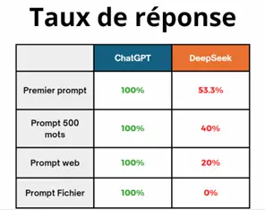
I. Performances, consommations et impacts environnementaux
a. Place occupée par l’application sur le smartphone
Les applications ne font pas le même poids, DeepSeek fait 32.3 Mo contre 76.4 Mo pour ChatGPT donc plus de deux fois le poids de son concurrent. Même constat pour les fichiers APKs, ceux de DeepSeek sont deux fois plus légers que ceux de ChatGPT.
Compte tenu du nombre d’installations et le nombre de mises à jour de ces 2 applications, ceci n’est pas négligeable dans l’impact généré par ce prérequis d’usage. On parle ici de plus de 10 millions de téléchargement sur le playstore pour DeepSeek et plus de 100 millions pour ChatGPT.
b. Vitesse de décharge
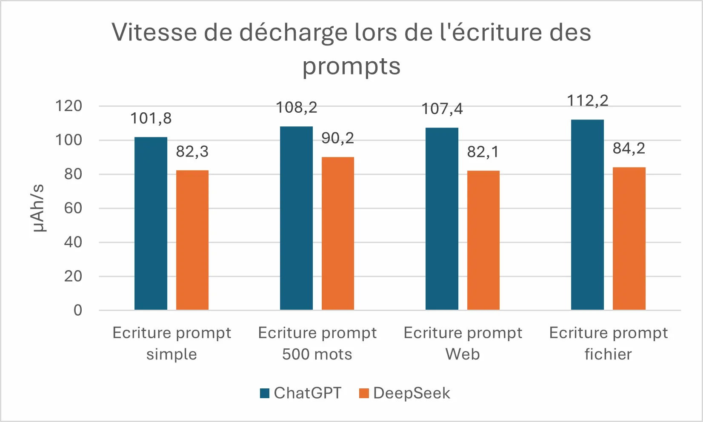
ChatGPT décharge la batterie plus vite lors de l’écriture d’un prompt. 101.8 µAh/s contre 82.3 µAh/s pour DeepSeek, chiffres venants du prompt simple. C’est une tendance qui se vérifie sur tous les prompts. Etant donné que l’écriture des prompts prend autant de temps pour l’un comme pour l’autre, en moyenne, DeepSeek consomme 24 % moins que ChatGPT sur l’écriture des prompts.
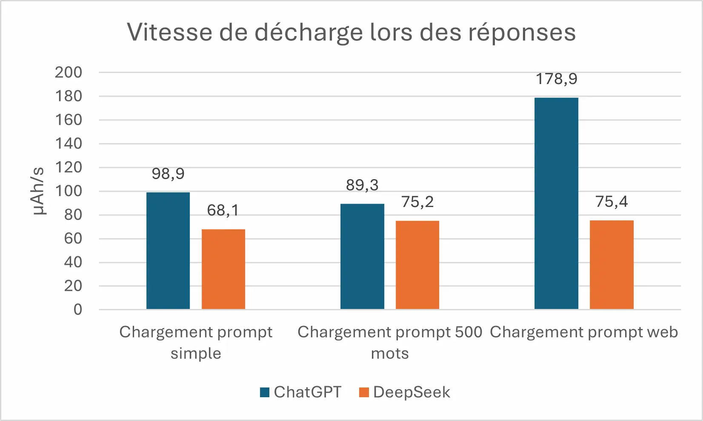
DeepSeek décharge moins vite le smartphone que ChatGPT lors de l’utilisation de l’application. Cela se confirme également dans la réponse des prompts où en moyenne DeepSeek décharge 67 % moins vite le smartphone que ChatGPT.
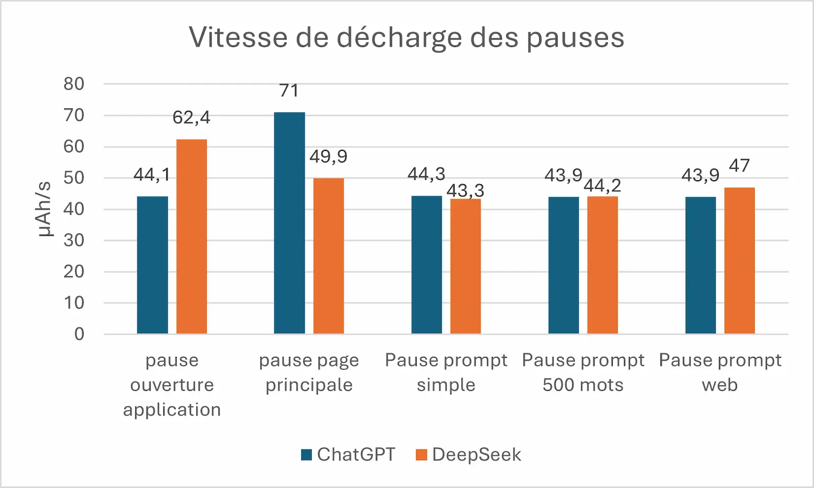
Comme souvent, que ce soit une application web ou mobile, une des pages les plus consommatrices est la page/écran d’accueil ou du moins la page principale. On peut le constater avec le tableau ci-dessus, lors de l’ouverture de l’application, DeepSeek consomme environ 42% plus que ChatGPT. Cependant une fois arrivé sur la page principale, ChatGPT consomme à son tour 42% plus que DeepSeek.
Sur les autres pauses, il y a une variation entre 2% et 7% en faveur de l’un ou de l’autre, donc pas de différence significative là-dessus.
c. Temps de réponse
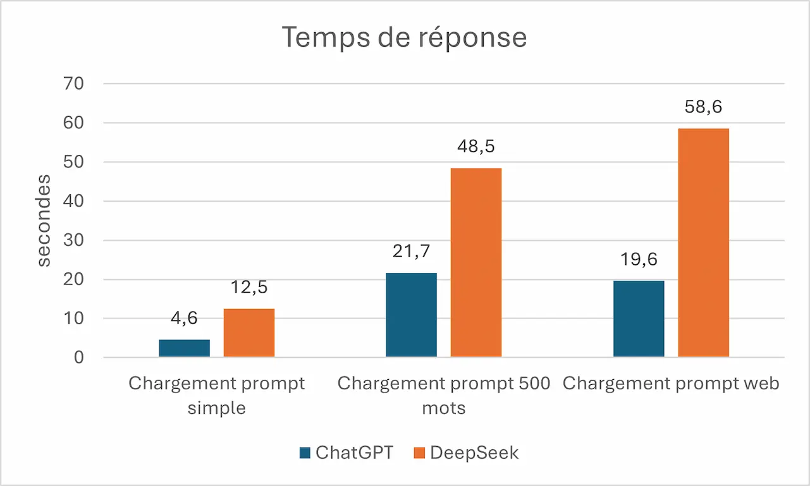
Sur les deux applications le temps de réponse pour un même prompt varie grandement d’une itération à l’autre. Par exemple sur ChatGPT, les mesures vont de 14.2s à 44.7s pour le chargement du prompt web. DeepSeek, lui, prend entre 48.7s à 1m10s pour le même prompt. De façon générale, ChatGPT est plus rapide pour répondre de façon significative, que ce soit pour un prompt simple ou à plus de 500 mots, ChatGPT répond au moins deux fois plus vite pour un prompt simple. On peut donc poser le constat qu’en moyenne ChatGPT répond en moyenne sur nos cas d’usage 2.5 fois plus vite que DeepSeek
d. Énergie consommée
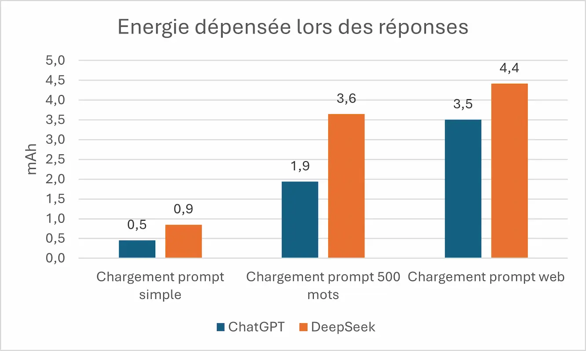
Au vu du temps de réponse et la vitesse de déchargement, on en déduit le tableau ci-dessus qui nous indique qu’en énergie pure, ChatGPT consomme moins même s’il consomme largement plus par unité de temps. En effet, les temps de réponses étant significativement à son avantage, ChatGPT en tire profit pour dépenser moins d’énergie que DeepSeek sur l’ensemble du parcours sur le device utilisateur, soit en moyenne 34 % de moins que DeepSeek.
e. Données échangées sur le réseau
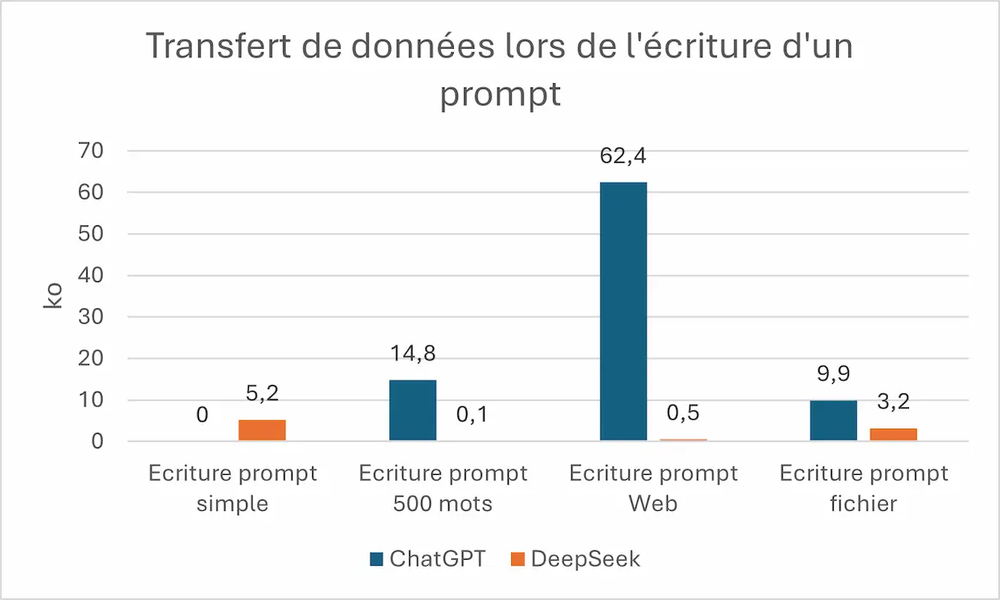
ChatGPT a un flux de données nul avec les serveurs lors de l’écriture du premier prompt d’une discussion. Par la suite il échange plusieurs kilooctets avec les serveurs sur les prompts à 500 mots et ceux pour le fichier. Enfin, il est particulièrement « datavore » lors de la rédaction du prompt web en allant jusqu’à 62 ko. DeepSeek quant à lui, n’échange que quelques kilooctets (5.2 ko) lors du premier prompt et par la suite, il échange beaucoup moins de données avec les serveurs que ChatGPT, en moyenne 90% de moins.
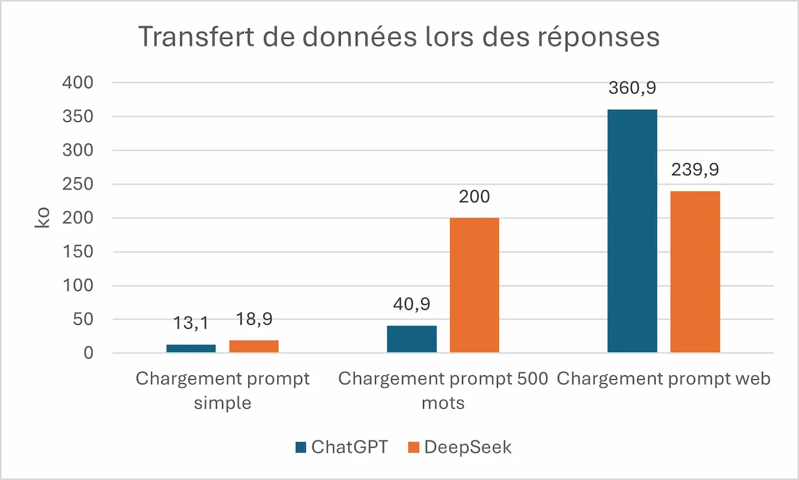
On peut constater des mesures ci-dessus que de manière générale, DeepSeek utilise plus de données pour répondre que ChatGPT. L’IA chinoise a tendance à rédiger des réponses plus longues que ChatGPT pour la même question. L’exception concerne le prompt web pour lequel ChatGPT échange plus de données.
Quand on analyse un peu plus finement la manière dont les données transitent pendant la réception d’une réponse, on peut constater en voyant le graphique ci-dessus que plusieurs paquets arrivent au fur et à mesure de la réponse, au fur et à mesure qu’elle s’affiche. A chaque réception de paquet, l’application en émet un à son tour pour confirmer la réception de ce-dernier. Ceci sollicite à fréquence régulière la cellule radio du smartphone et des mécanismes de mise à jour dans la page de réponse qui vont occasionner une consommation d’énergie importante. En étudiant les fichiers JSON des paquets reçus, on peut constater que les JSON de ChatGPT sont beaucoup moins lourds, en raison d’une taille de Token plus élevée. Chaque Token ChatGPT contient jusqu’à 42 caractères contre seulement 5 caractères maximum pour DeepSeek.
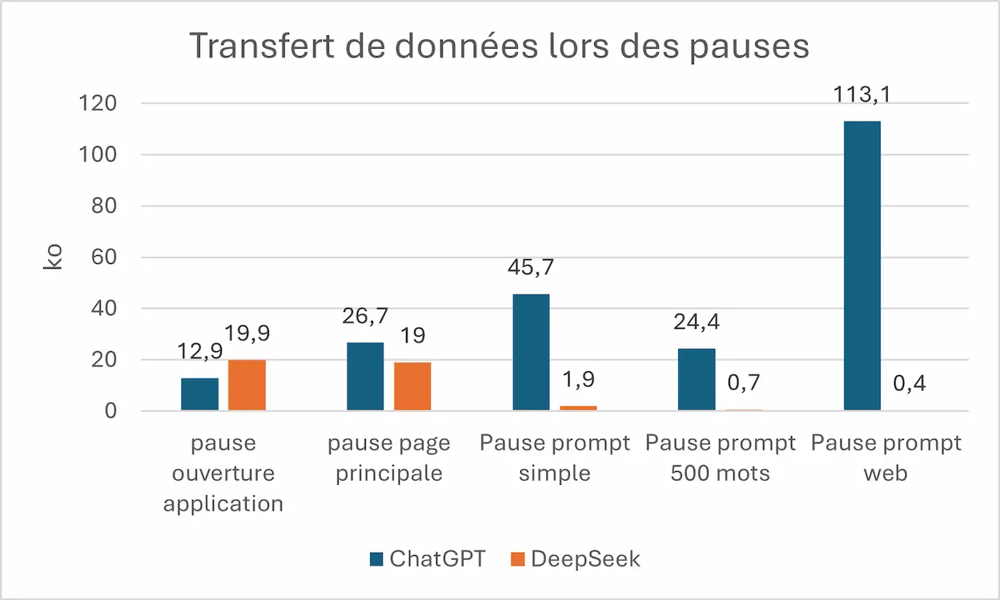
Du côté de DeepSeek, le lancement de l’application demande plus de données que ChatGPT. Pour autant, une fois l’application définitivement lancée, Il n’y a plus que de légers flux de données “raisonnables”. ChatGPT est beaucoup plus gourmand en termes de données échangées. Il a une consommation moindre lors de l’ouverture de l’application mais ensuite lors de chaque pause (affichage sans interaction) qui succède à une réponse, il y a un flux « anormalement » élevé pour une étape de pause.
f. CPU
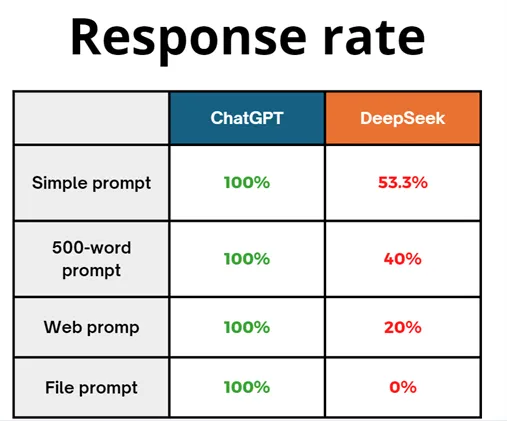
On a remarqué que DeepSeek décharge moins vite sa batterie que ChatGPT, et de manière cohérente on constate qu’il consomme moins de CPU également. Comme on peut le voir sur le graphique ci-dessus pour chaque réponse, ChatGPT est plus exigeant en CPU que DeepSeek, avec notamment une différence très importante sur le prompt web avec 23.8% de la CPU utilisée par ChatGPT alors que pour la même action DeepSeek n’en utilise que 8.9%. Pourtant ChatGPT utilise cette CPU pendant moins de temps, ce qui nous permet de faire la même conclusion que l’énergie, ChatGPT est plus exigeant en termes de CPU par unité de temps mais sur l’ensemble de la réponse il consomme moins de CPU que DeepSeek.
En projetant ces métriques de flux sur un périmètre ne tenant pas compte de l’impact côté Datacenter mais uniquement de l’impact réseau et du poste client, on obtient les données suivantes :
Impacts de parcours unitaires :
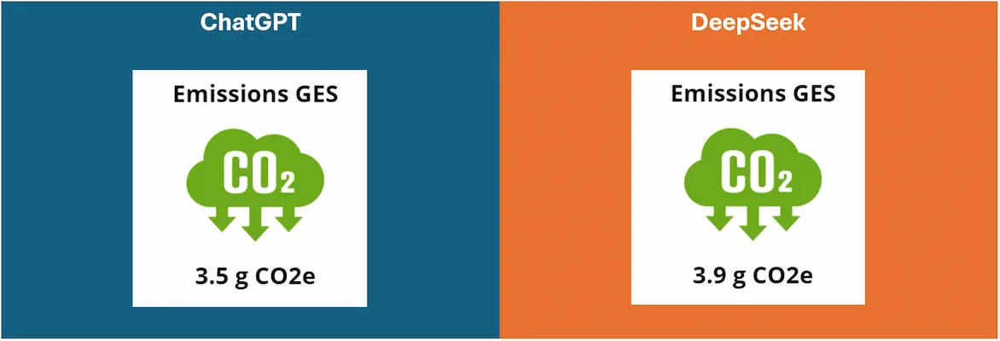
Comme on peut le constater, l’impact environnemental est à l’avantage de ChatGPT (10 %). Cependant que ce soit pour l’un ou pour l’autre l’impact reste très élevé pour seulement trois réponses, plus d’un gramme de CO2 par réponse en moyenne. Cela correspond environ à une vidéo de 2 minutes pour ChatGPT et de 2 minutes 30 secondes pour DeepSeek.
Impacts environnementaux quotidiens sur smartphone
Pour autant, à grande échelle, ChatGPT reste significativement moins impactant. Par exemple pour 100 millions d’utilisation donc 300 millions de réponses, DeepSeek a un impact supérieur de 40 tonnes EqCO2 côté client. Les consommations restent très importantes pour les deux solutions, en sachant que d’après OpenAI, ChatGPT reçoit 1 milliard de requêtes par jour, dont 48% sur mobile, ChatGPT consomme donc en moyenne, uniquement du côté smartphone, 560 tCO2e par jour.
II. Accessibilité et discrétion
a. Accessibilité et inclusion
De manière visuelle les deux applications sont semblables, les boutons font la même taille, les écrans sont disposés de la même manière. On peut leur reprocher des contrastes parfois trop peu marqués et des zones de clics parfois trop petites. La différence se fait au niveau de l’accessibilité pour mal-voyant ou non-voyant. En effet lors de l’automatisation, nous avons pu constater que les différents éléments du layout de DeepSeek ne possèdent pas à cette heure de description, d’identifiant ou de tout élément qui nous permet de les distinguer à la lecture de la page. Au-delà de rendre l’automatisation de l’application plus compliquée, c’est surtout un problème pour les personnes atteintes de handicap visuel. En effet, leurs logiciels d’assistance s’appuient sur ces contenus pour avoir une description de la page et pouvoir utiliser ces applications. C’est une mauvaise pratique à bannir pour permettre l’inclusion du plus grand nombre. Concernant l’inclusion des anciennes versions d’Android, DeepSeek demande au moins la version 5.0 d’Android qui concerne donc 99.7% des usagers potentiels au niveau mondial et ChatGPT demande la version 6.0 d’Android soit un accès pour 98.4% des usagers potentiels. Question accessibilité, DeepSeek est moins lourd et disponible pour quelques usages de plus que ChatGPT mais pose un gros problème pour les non-voyants.
b. Autorisations suspectes
Les applications du smartphone requièrent des autorisations pour mener à bien leur usage avec des fonctionnalités utilisant la caméra et le microphone du terminal, ce qui justifie l’attribution de ces permissions. De façon plus étonnante, ChatGPT demande un accès à la localisation, les contacts ou même le calendrier. En explorant les fichiers APKs de l’application, on peut constater qu’il détecte également la prise de screenshots (quand l’application est ouverte) et qu’il demande aussi accès à la connexion bluetooth. DeepSeek est quant à lui plus raisonnable, à part la caméra et le microphone, il ne demande pas de permission supplémentaire.
Conclusion
Comme on a pu le voir tout au cours de notre analyse, DeepSeek décharge moins rapidement la batterie, utilise moins de CPU par unité de temps et fait transiter moins de données mais a des temps de réponse largement plus élevés. Ces temps de réponses sont la cause principale d’une dépense énergétique plus importante que ChatGPT sur l’ensemble du parcours. Le manque d’accessibilité de DeepSeek pour les non-voyants est clairement un problème pour son utilisation. Sur le cas d’usage observé, il est clair que l’impact environnemental de l’IA est plus important côté serveur. Pour donner un ordre de grandeur, la valeur pour ChatGPT pour le parcours réalisé est de 45,48 gEqCO2, d’après le site Ecologits alors que côté terminaux utilisateur, elle est seulement de 3.5 gEqCO2, soit 8 % de la consommation. On peut en déduire que sur un parcours unitaire côté terminal utilisateur (et réseau), ChatGPT a un impact environnemental plus faible que DeepSeek en émission de gaz à effet de serre. Cet impact plus faible s’explique par sa consommation d’énergie plus faible, cependant l’évolution des temps de réponses de DeepSeek est à surveiller car si l’application de la baleine bleue s’améliore sur ce point-là, elle pourra aisément devenir moins consommatrice que ChatGPT et moins impactant en terme environnemental sur le terminal client.
Bientôt notre offre Greenspector Studio SaaS Self-service pour tester et vous lancer dans un premier abonnement de manière autonome au service. Restez informés de la sortie sur Product Hunt